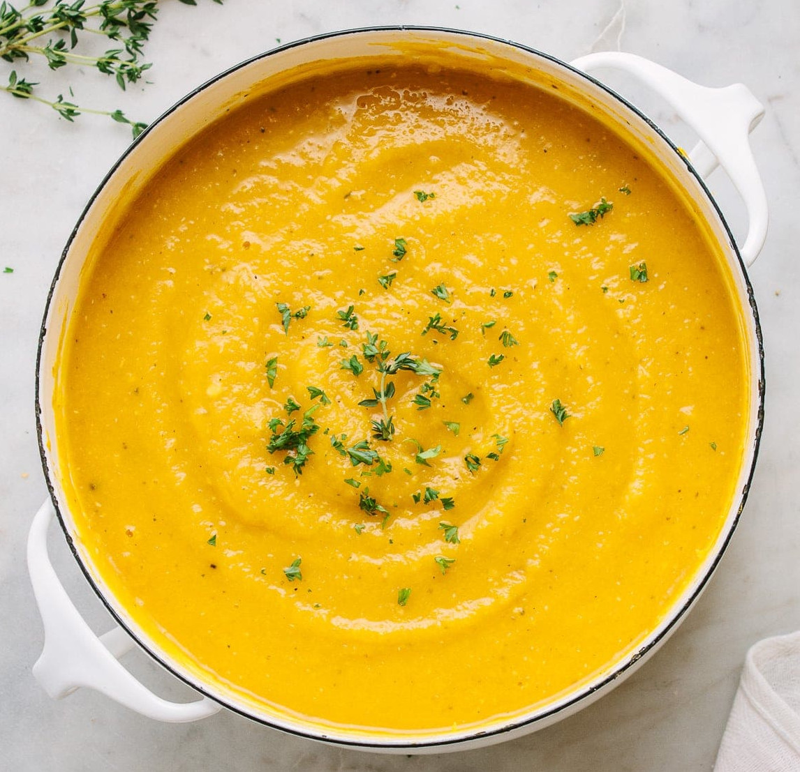

Pumpkin Soup Recipe

Description
Some recipes should be kept simple as nature intended them to be, and in my opinion, Pumpkin Soup is one of those dishes.
The natural flavour of pumpkin is good enough that you need very little to make a beautiful, creamy, full flavoured soup.
Ingredients
- 1 medium brown onion, chopped
- 1 clove garlic, crushed
- 1 tablespoon olive oil
- 750g pumpkin, peeled and cubed
- 1 large potato, peeled and cubed
- 4 cups vegetable or chicken stock
- ¼ cup low-fat natural yoghurt
Steps
- Heat oil in a large pot and cook onion and garlic over low heat until onion is translucent.
- Add pumpkin, potato and stock and bring to the boil.
- Reduce heat and simmer for 20 minutes or until pumpkin is tender.
- Remove from heat and cool slightly.
- Puree in a blender until smooth.
- Add yoghurt to serve.
Back to recipes page